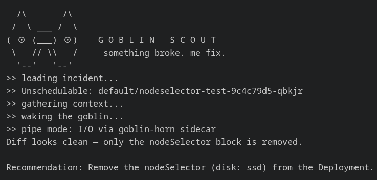

i stuck a goblin inside a k8s cluster
i don't know, that just sounds fun to do, and i did it!

the idea is that an issue occurs in the middle of the night, the goblin pings you on telegram (or slack, whatever), you see the proposed solution, or you chat some more with it to come up with another fix, you either accept the fix and get back to sleep, or you decide this needs deeper investigation.
i've been toying with the idea to build an k8s operator for a little bit, started some time back with an idea for a flight radar/tracker, which was kind of a cool idea, but it also wasn't really doing much for me.
on that subject, there is such a difference when you have some kind of fire inside, some project idea that you can't let go. my work flow has always been, getting inspired, start thinking about what i could and want to build, start designing and get to a PoC/MVP, build a prototype. with AI this workflow has been greatly sped up.
back to my goblin, the core of the concept is: a small AI agent inside a k8s cluster that can assess a range of issues, and potentially act on them with some limited patching work. my motivation was, could a create a small LLM agent with limited permissions, that can still be useful. in the process i would tick of a few cool things: k8s operator + AI agent + Telegram bot
the flow is this: - controller listens for issue regarding pods (e.g. oomkilled, stuck in pending, etc). - a "remeditation CR" is created, which on its turn spins up a "goblin scout" - this scout is a small program that gets fed with the context of the issue first - the scout proposes a solution, from this point on you can communicate with this goblin - it will e.g. prupose a patch, and only with explicit concent from a human will it be applied - issue gets fixed, remeditation CR gets closed
the telegram part is just another interface to communicate with the scout,